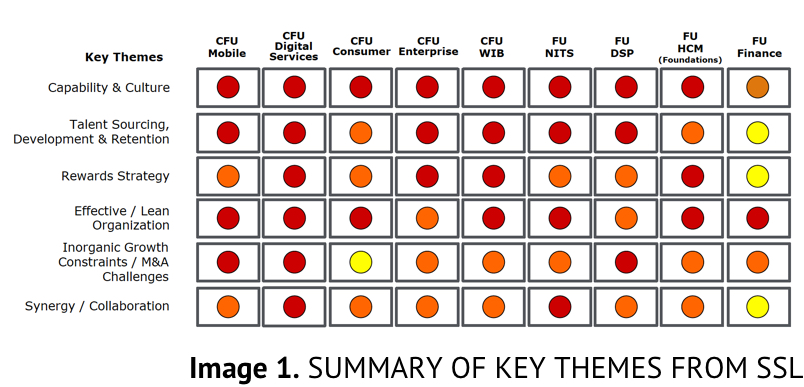

Ready to run Mission Analysis!
We’re gathering, capturing, and analyzing all information from qualitative and quantitative sources to draw the themes.
1
Find Out Customer Needs and Pain Points
WHAT WE DID
Here the Labs played its role. Together with CFU/FU, CHCOs, HC, VPs, and Business Partners, held Strategy Sharing Labs (SSL) to direct their findings as qualitative analysis in order to identify improvement opportunities.
KEY OUTPUT
The current strategies of CFU/FU as their focus areas and services they deliver.
Capability & Culture:
- Talent Sourcing, Development, and Retention
- Rewards
- Effective/Lean Organization
- Inorganic Growth
- Synergy/Collaboration

HIGHLIGHTS
- Qualitative analysis of gathered output in the Strategy Sharing Sessions
- Quantitative analysis of gathered HC and employee data as part of HC Work Activity review
- Current state assessment of the Workforce Planning needs and priorities for Telkom Group HCM
FU HCM spotted the opportunities to make an improvement on HCM, after analyzing of current challenges.
2
Evaluate Ppportunities to ‘Hack'
WHAT WE DID
When we were leading the Corporate Strategy Lab (CSL), we find a list of 21 opportunities as priorities.
KEY OUTPUT
- Developed a draft of Deloitte’s recommendations for Telkom based on the key challenges identified in SSL
- Identification of opportunities and priority areas to assist the guidance of how the CSL will be run, i.e. the 4 corners for in-depth discussion by Deloitte facilitators and Telkom employees
HIGHLIGHTS
- Talent sourcing, development & retention
- Organization & Culture
- (Inorganic) Growth/ Synergy
- Foundation
We set Course of Action to align the top strategic priorities for Telkom HCM amongst business and HCM Leaders.
3
Prioritize Opportunities
WHAT WE DID
Through Corporate Strategy Lab (CSL), we gathered Business and Human Capital leaders to brainstorm the perspective and align a shared vision of Telkom Group's HCM, and to find understanding of current and future priorities.
KEY OUTPUT
- Priorities were identified and evaluated based on the input from CFU/FU representatives (what is important to them, what would they like to see an improvement in)
- We have made iterations to the initial key priority areas and developed the Sprint themes for further detailing and planning:
- - Future-proof HC function
- - Accelerate Capability for Digital Future
and Inorganic Growth
- - Digital Leadership and Culture
- - Unlocking the Flexible Organization
- - Unlocking the Organizational Bandwidth
After that, we executed all identified priorities by held four Sprints to co-develop experiments. For the result, there're 28 programs under 4 Key Themes.
4
Define Programs & Experiments
WHAT WE DID
In the Sprint sessions, we selected HCM Stakeholders and the business to make identified priority areas, activity details, risk, dependencies, pre-requisites, skill, etc. into co-design programs.
KEY OUTPUT
Each Sprint session aims to identify:
- Detailed programs
- Experiments to launch
HIGHLIGHTS
Sprint structure:
Part 1:
- Introduction to Sprints
- Why this particular Sprint?
- Who are we solving for?
Part 2:
- Roadmap to realize the opportunities
- Detailing the Initiatives
- Identify dependencies, execution plan, charter
Part 3:
- Design experiments to launch
- Identify the experiment team
Results from Sprints were articulated into the key themes and programs for the Master Plan.
The last but not least, we consulted HC experts industry to finalize the Master Plan in the Veteran Challenge and to socialize the Plan with selected internal stakeholders in the War Room.
5
Articulate Learning & Refine
WHAT WE DID
- Consulted Deloitte HC experts industry to challenge, refine, and finalize the programs and experiments
- Socialized and refined the Master Plan with select stakeholders as part of the War Room
- Prioritized the top 10 programs based on feedback and considerations on resources, benefits realization, and urgency
KEY OUTPUT
- Refined the Master Plan based on feedback from experts and the Telkom leadership
- Validated proposed Master Plan programs with CFU/FU representatives
Here's the decision matrix to determine the 2018 priorities
And we are ready to move and bring the Master Plan to life!
6
Start Mobilizing
WHAT WE DID
Let's go achieve the Top 10 Program together!
NEXT STEPS
- Identify and allocate resources (team, time, budget) to implement HC programs
- Establish responsible party to ensure synchronization, track program implementation, progress and success
- Revise and make improvements as needed